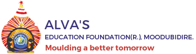
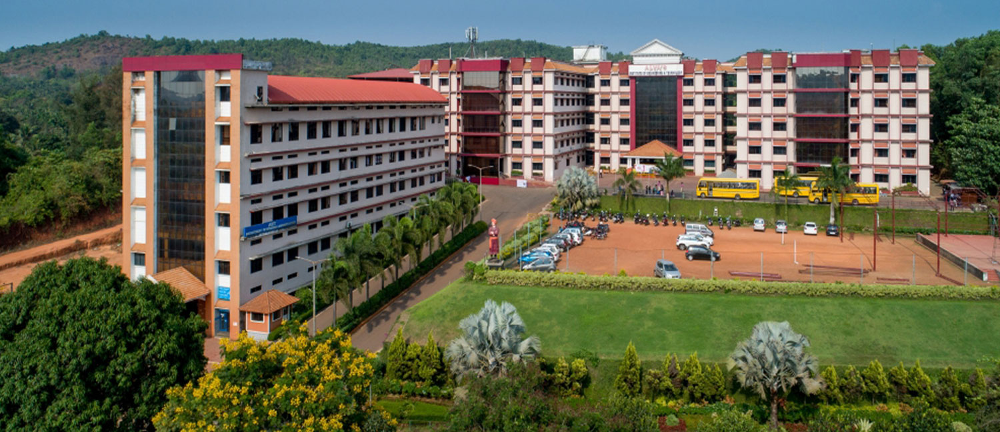

Welcome to Alva’s Institute of Engineering & Technology (AIET):
Alva’s Education Foundation® (AEF) was born out of the entrepreneurial vision of Dr. M Mohan Alva, an ayurvedic doctor, an educationalist and a social reformer in Moodubidri, South India. Alva’s Institute of Engineering and Technology is a premier engineering college situated in Mijar was founded in 2008 by AEF to provide affordable quality professional education to the youth of this underdeveloped region.
AIET in its endeavour to excel in teaching, research and service offers Bachelor’s Degree in Mechanical Engineering, Electronics and Communication Egineering, Computer Science Engineering, IT Enabled Services Engineering, and Civil Engineering. AIET also offers a post graduate degree in Business Administration.
VISION:
“Transformative education by pursuing excellence in Engineering and Management through enhancing skills to meet the evolving needs of the community”
MISSION: